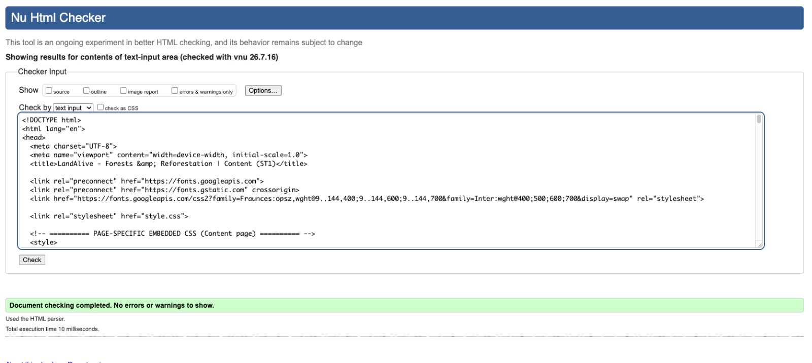
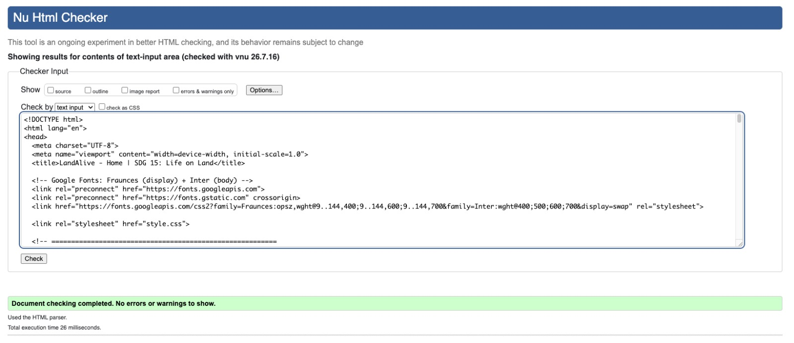
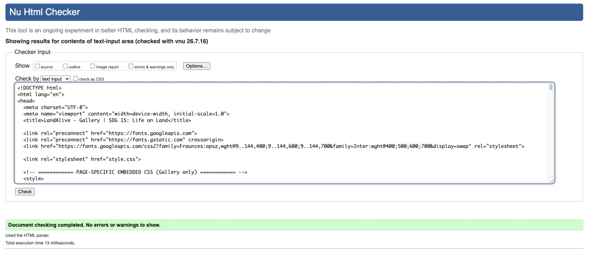
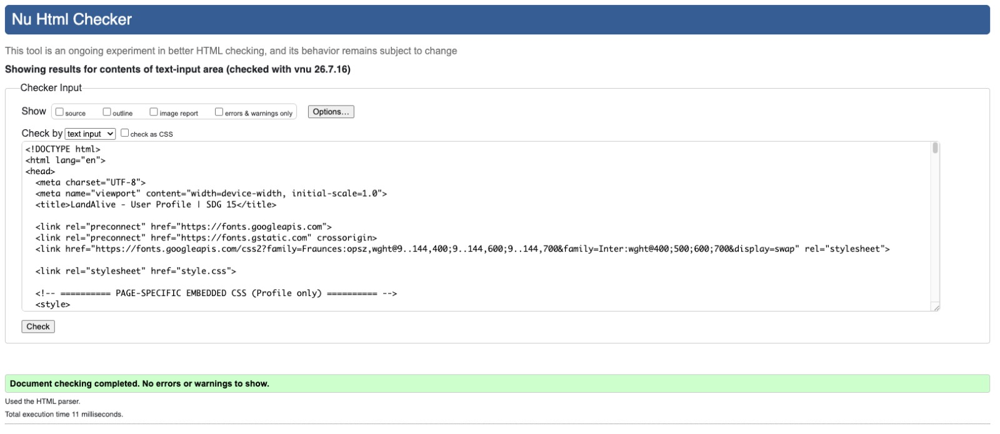
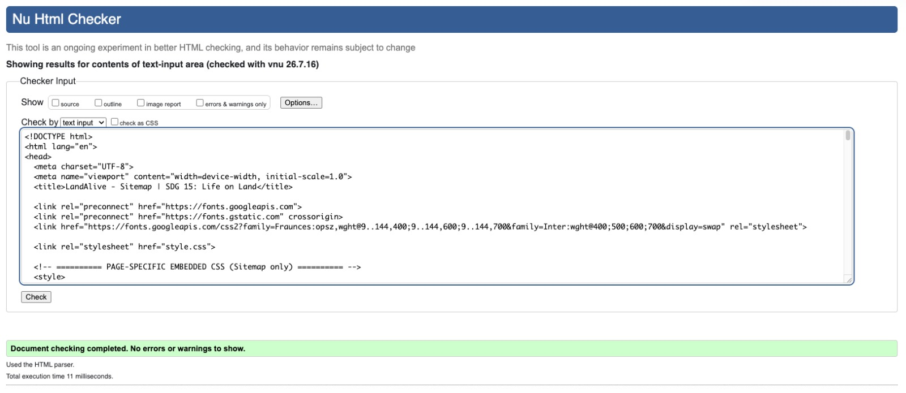

Content Page 1 (content_ST1.html)
✔ Document checking completed. No errors or warnings to show.
Validated with the W3C Nu HTML Checker.

W3C Markup Validation results for every page I implemented. Each page returns 0 errors.
✔ Document checking completed. No errors or warnings to show.
Validated with the W3C Nu HTML Checker (validator.w3.org/nu).

✔ Document checking completed. No errors or warnings to show.
Validated with the W3C Nu HTML Checker.

✔ Document checking completed. No errors or warnings to show.
Validated with the W3C Nu HTML Checker.

✔ Document checking completed. No errors or warnings to show.
Validated with the W3C Nu HTML Checker. Inline SVG markup validated cleanly.

✔ Document checking completed. No errors or warnings to show.
Validated with the W3C Nu HTML Checker.

Early drafts flagged a missing alt attribute and an
unclosed <li>. I fixed both, re-ran the checker,
and all pages now pass with zero errors. I learned to validate often
rather than only at the end.